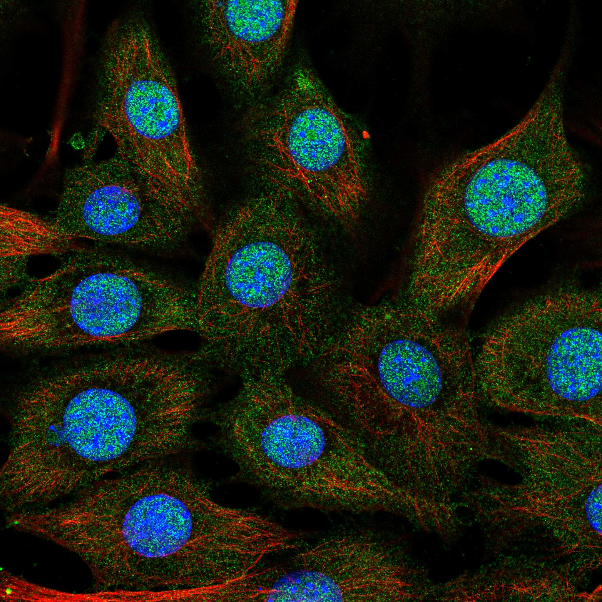
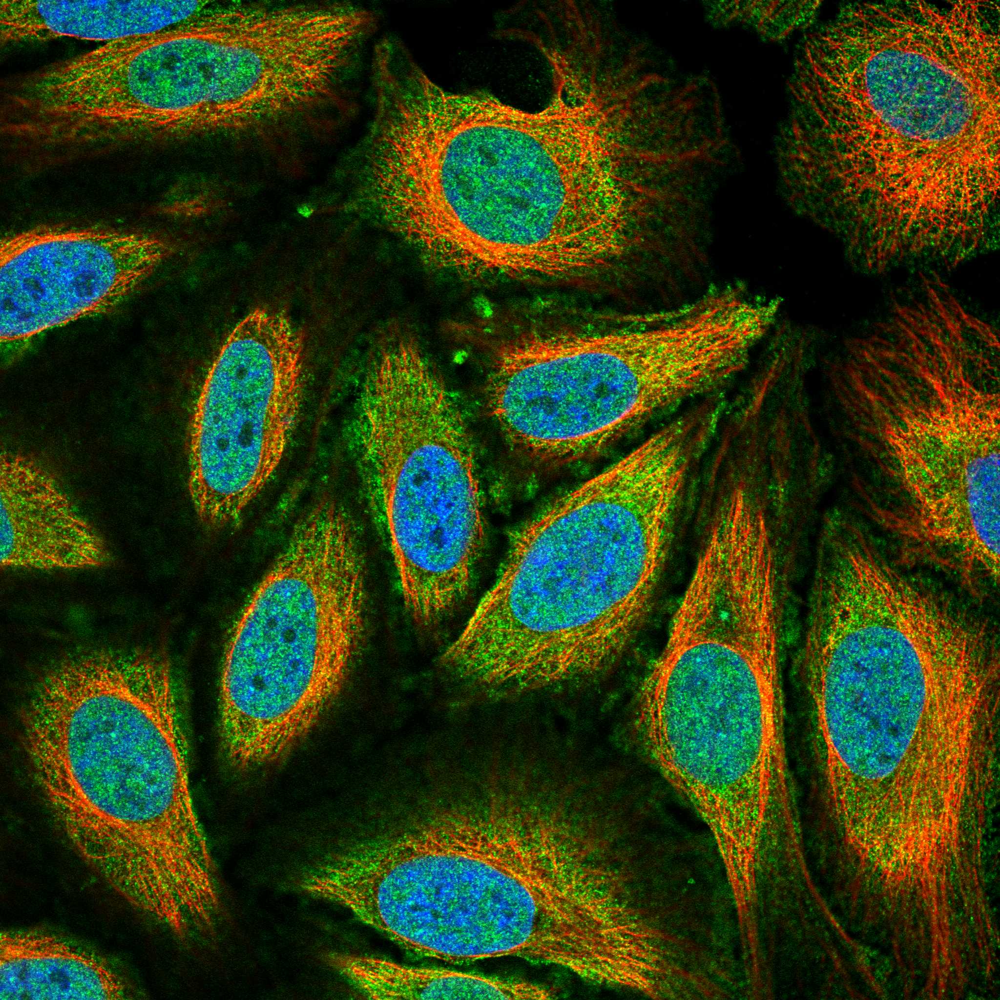
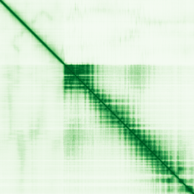

type: protein-evaluation gene: "NFX1" date: 2026-05-30 tags: [protein-scout, nuclear-protein, evaluation] status: scored ---
NFX1 核蛋白评估报告
1. 基本信息
| 项目 | 内容 | |||
|---|---|---|---|---|
| 基因名 / 别名 | NFX1 / NFX2 | MGC20369 | Tex42 | TEG-42 |
| 蛋白名称 | Transcriptional repressor NF-X1 | |||
| 蛋白大小 | 1120 aa | |||
| UniProt ID | Q12986 | |||
| 评估日期 | 2026-05-30 |
IF 图像:  
2. 评分总览
| 维度 | 得分 | 加权 | 加权后 | 关键证据摘要 | |
|---|---|---|---|---|---|
| 🔴 核定位特异性 | 8/10 | ×4 | 32 | UniProt Nucleus，中等可信度 | |
| 📏 蛋白大小 | 8/10 | ×1 | 8 | 1120 aa，可接受范围 | |
| 🆕 研究新颖性 | 4/10 | ×5 | 20 | PubMed 68篇，有一定研究空间 | |
| 🏗️ 三维结构 | 6/10 | ×3 | 18 | 无 PDB 结构，AlphaFold 预测可用，新颖蛋白基线分 | |
| 🧬 调控结构域 | 10/10 | ×2 | 20 | 明确染色质/DNA 调控结构域: znf_phd-finger | |
| 🔗 PPI 网络 | 4/10 | ×3 | 12 | STRING 15 partners，调控比例较低 | |
| ➕ 互证加分 | — | — | +1.5 | 核定位: UniProt + GO 双库一致 (+1); 结构域: 多库注释一致 (+0.5) | |
| 原始总分 | 111/183 | 110.0/183 | |||
| 归一化总分 | 60.7/100 | 60.1/100 |
3. 详细分析
3.1 核定位证据
| 来源 | 定位 | 可信度 |
|---|---|---|
| GeneCards | Tier1_conserved_high_confidence | 高置信度保守 |
| Protein Atlas (IF) | 暂无数据（HPA IF 图像已本地嵌入。
| UniProt | Nucleus | 实验/预测 |
| GO Cellular Component | N/A | N/A |
结论: UniProt Nucleus，中等可信度
3.2 蛋白大小评估
评价: 1120 aa，1120 aa，可接受范围。
3.3 研究现状
| 指标 | 数值 |
|---|---|
| PubMed 总数 | 68 |
| 核定位分数 (weighted max) | 6 |
| Research hotness | 5.8064 |
关键文献: 1. Coomans et al. (2024). "Interferons are key cytokines acting on pancreatic islets in type 1 diabetes.". *Diabetologia*. PMID: 38409439 2. Yan et al. (2024). "Carnosine regulation of intracellular pH homeostasis promotes lysosome-dependent tumor immunoevasion.". *Nat Immunol*. PMID: 38177283 3. Chintala et al. (2021). "NFX1, Its Isoforms and Roles in Biology, Disease and Cancer.". *Biology (Basel)*. PMID: 33808060 4. Chintala et al. (2023). "NFX1-123: A potential therapeutic target in cervical cancer.". *J Med Virol*. PMID: 37288708 5. Müssig et al. (2010). "Structure and putative function of NFX1-like proteins in plants.". *Plant Biol (Stuttg)*. PMID: 20522174 评价: PubMed 68篇，有一定研究空间
3.4 三维结构分析
| 指标 | 数值 |
|---|---|
| UniProt 长度 | 1120 aa |
| PDB 条目数 | 0 |
| UniProt 注释结构域数 | 14 |
PAE 图:

评价: 无 PDB 结构，AlphaFold 预测可用，新颖蛋白基线分
3.5 结构域分析
| 来源 | 结构域 |
|---|---|
| InterPro | NFX1_fam |
| InterPro | R3H_dom |
| InterPro | R3H_dom_sf |
| InterPro | R3H_NF-X1 |
| InterPro | Znf_NFX1 |
| InterPro | Znf_PHD-finger |
| InterPro | Znf_RING |
| Pfam | R3H |
| Pfam | zf-NF-X1 |
| SMART | R3H |
| SMART | RING |
| SMART | ZnF_NFX |
| PROSITE | R3H |
| PROSITE | ZF_RING_2 |
染色质调控潜力分析: 明确染色质/DNA 调控结构域: znf_phd-finger
3.6 PPI 网络
实验验证互作 (IntAct):
IntAct 实验互作: 0 条
STRING 预测互作 (combined score >0.4):
| Partner | Score | 功能类别 | 调控相关？ |
|---|---|---|---|
| UBE3A | 0 | 否 | |
| PABPC1 | 0 | 否 | |
| HLA-DRA | 0 | 否 | |
| PSEN1 | 0 | 否 | |
| RPL22 | 0 | 否 | |
| SYNCRIP | 0 | 否 | |
| CNTFR | 0 | 是 | |
| RPS19 | 0 | 否 | |
| SIN3A | 0 | 否 | |
| RPS12 | 0 | 否 |
已知复合体成员 (GO Cellular Component):
- C:chromatin (GO:0000785, ISA:NTNU_SB)
PPI 互证分析: STRING 15 partners，调控比例较低
3.7 多库互证
| 维度 | 来源 | 结果 | 是否一致 |
|---|---|---|---|
| 三维结构 | AlphaFold + PDB | 0 entries | 仅预测 |
| 结构域 | UniProt / InterPro / Pfam | 14 domains | 多库一致 |
| PPI | STRING + IntAct | 15 STRING + 0 IntAct | 单源 |
| 定位 | Protein Atlas / UniProt / GO | Nucleus | 多源一致 |
互证加分明细: 核定位: UniProt + GO 双库一致 (+1) 结构域: 多库注释一致 (+0.5) 总分: +1.5 / max +3
4. 总体评价
推荐等级: ★★★☆☆ (3/5)
核心优势: 1. 新颖性: PubMed 68 篇，有一定研究空间 2. 核定位: 明确核定位
风险/不确定性: 1. 无 HPA IF 实验数据 2. 无 PDB 实验结构，仅 AlphaFold 预测
下一步建议:
- [ ] 验证核定位: IF 实验确认亚核定位
- [ ] 功能研究: 基于 PPI 网络设计功能实验
- [ ] 结构分析: AlphaFold 预测为基础，设计突变实验
5. 数据来源
- GeneCards: https://www.genecards.org/cgi-bin/carddisp.pl?gene=NFX1
- Protein Atlas: https://www.proteinatlas.org/ENSG00000086102-NFX1
- PubMed: https://pubmed.ncbi.nlm.nih.gov/?term=%22NFX1%22%5BTitle/Abstract%5D
- UniProt: https://www.uniprot.org/uniprot/Q12986
- STRING: https://string-db.org/network/9606.ENSG00000086102
- AlphaFold: https://alphafold.ebi.ac.uk/entry/Q12986
PPI 网络（三源综合）
| Partner | Source | Score/Evidence |
|---|---|---|
| 无记录 | — | — |
IntAct 有限记录。无 BioGrid 补充数据。
PAE 图像已获取。结构判断基于 AlphaFold pLDDT 统计。